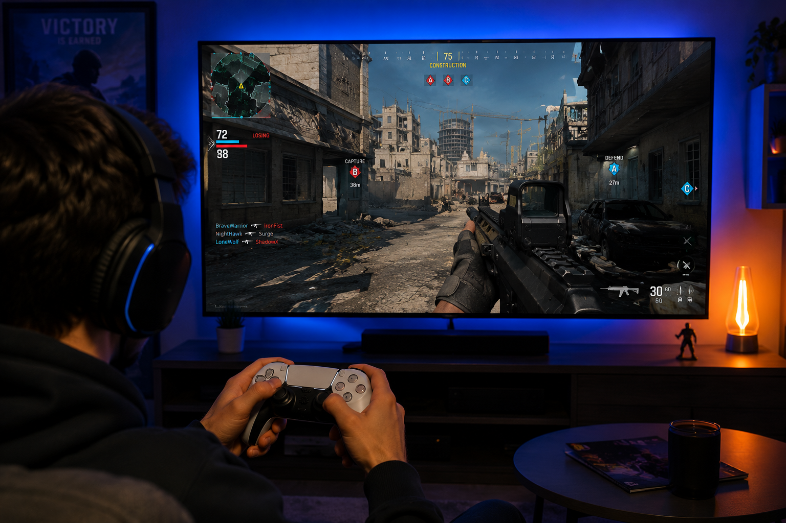

Video games have become one of the most popular forms of entertainment in the world. What started with simple arcade machines and home consoles has evolved into a global industry enjoyed by people of all ages. Modern games offer a wide range of experiences, including action, adventure, sports, simulation, and multiplayer competition. Improvements in technology have made games more immersive, realistic, and accessible than ever before. Gaming is also a social activity that allows players to connect with friends and meet new people online. The growth of streaming platforms, gaming communities, and eSports tournaments has helped make video games a major part of modern culture. Today, gaming continues to grow as both a hobby and a form of entertainment enjoyed by millions every day.

Video games offer more than just entertainment. Many games help improve problem-solving, hand-eye coordination, strategic thinking, and teamwork. Some encourage creativity by allowing players to build, design, and explore unique virtual worlds. Multiplayer games also help players develop communication skills while working together toward common goals. Gaming can also be a great way to relax and reduce stress. Whether playing competitively or casually, players can enjoy exciting challenges and memorable experiences. When balanced with other responsibilities, video games can be a positive activity that supports learning, creativity, and social interaction.
.png)